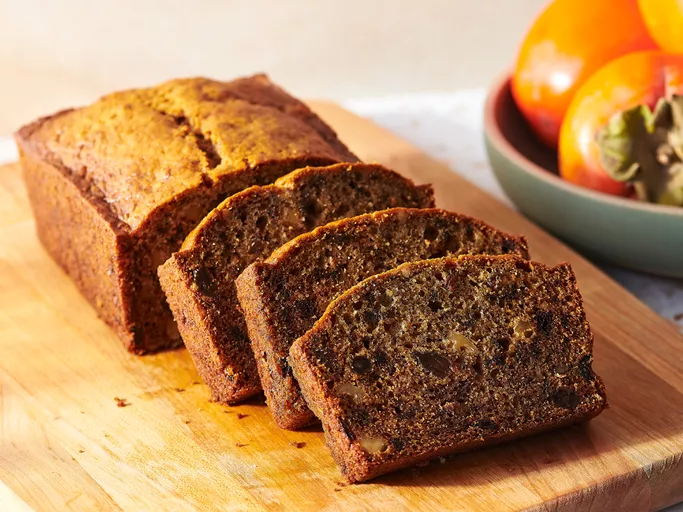

Persimmon Bread

Description
As far as fall baking goes, there are other flavors that hog the
limelight (we're looking at you, pumpkin spice!). The humble persimmon
is oft forgotten, except by those who already love its honey-like flavor
and know that it is only available to enjoy during a short season.
Persimmon bread is the perfect easy recipe to make with a surplus of
persimmon pulp. Using extra ripe hachiya persimmons, the sweet flesh is
easy to scoop away from the persimmon skin with a spoon. For 1 cup of
persimmon pulp, you'll need 2 to 3 hachiya persimmons, depending on
their size. You can also use smaller fuyu persimmons, which typically
take longer to fully ripen than hachiya.
Ingredients
- 2 large eggs
- 1 ½ cups all-purpose flour
- ¾ cup white sugar
- ½ teaspoon salt
- ½ cup vegetable oil
- 1 teaspoon ground cinnamon
- 1 cup persimmon pulp
- ½ cup chopped walnuts
- 1 teaspoon baking soda
- ½ cup raisins
Steps:
-
Gather all ingredients. Preheat the oven to 325 degrees F (165 degrees
C). Lightly grease a 9x4-inch pan.
-
Combine flour, cinnamon, salt, nuts, and raisins in a small bowl.
-
Blend eggs, sugar, and oil in a large bowl. Stir baking soda into
persimmon pulp until well blended; add to sugar mixture.
- Fold in flour mixture. Pour batter into prepared pan.
-
Bake in the preheated oven until a toothpick inserted into the center
of the cake comes out clean, about 1 hour to 1 hour 15 minutes.
- Serve and enjoy!